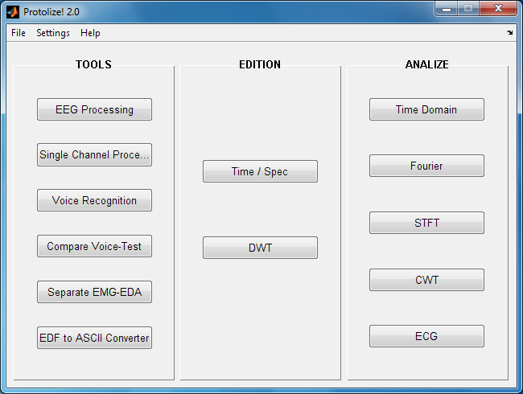
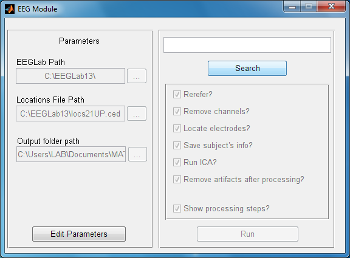
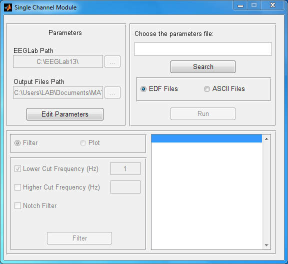
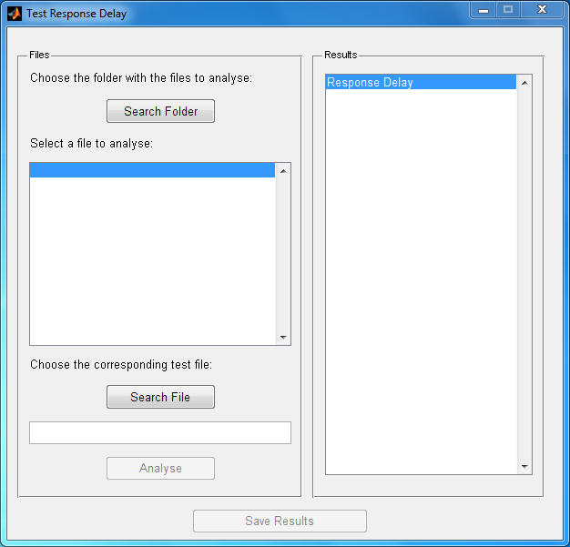
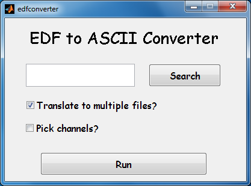

O PROTOLIZE! é uma ferramenta escrita em MATLAB para processamento de sinais de caráter biológico. Inicialmente feito pelo professor Sergio Ocazionez, que hoje se encontra no Instituto do Cérebro da Universidade Federal do Rio Grande do Norte, durante sua tese de mestrado na Universidade de Brasília, o programa está sendo trabalhado no Laboratório de Neurociência e Comportamento da Universidade de Brasília.

O Protolize! está sendo escrito em MATLAB 2010.
Protolize! requer MATLAB R2008a rodando em um computador rodando Microsoft Windows Vista ou posterior com no mínimo 1GB RAM.
Para usar os módulos de processamento EEGModule e Canal único, o Protolize! requer que o [Microsoft Office](https://products.office.com)© esteja instalado.
Para fazer o download do Protolize!, baixe o arquivo protolize.zip disponível no repositório do GitHub e extraia seu conteúdo em um pasta específica. Inicie o MATLAB e vá à pasta onde você extraiu a sua versão do Protolize!. Dentro desta pasta, entre o comando protolize. Se não houver nenhum problema, o menu principal do Protolize! aparecerá, indicando que ele está pronto para uso.]
Esta documentação se refere à versão v0.2b do Protolize!
Os sinais a serem processados deverão estar no formato *.ASCII. Para converter arquivos EDF em ASCII, há um ferramenta dentro do próprio Protolize! para isso. Certifique-se que há somente um sinal por arquivo ASCII para que o programa aceite a entrada.
O menu principal contém 3 divisões: Tools, Edition e Analysis. A partir delas, podemos acessar as diversas funcionalidades do Protolize! como descritas em suas respectivas sessões.
Além disso, há uma barra de ferramentas para acesso rápido de diversos ajustes do programa, do módulo de estudos e do arquivo de ajuda.
No topo da janela principal, temos uma barra de ferramentas com as opções File, Settings e Help.
Em File, pode-se sair do programa ou do módulo; ou abrir ou salvar arquivos de acordo com o módulo que está sendo usado.
Em Settings, pode-se alterar diversos valores usados na análise de sinais, em especial a taxa de amostragem (chamada de fs); e os ritmos mentais usados no estudo em questão. O software define, por padrão, os seguinte ritmos mentais:
Também pode-se ajustar o caminho em disco para o EEGLAB, caso disponível no computador do usuário, para que ambos possam atuar no processamento de sinais. Estes valores podem ser ajustados de acordo com a necessidade do usuário, e todos os parâmetros disponíveis para ajuste ficam guardados em memória para uso futuro.
Em Help, tem-se acesso a este arquivo de ajuda que você está lendo.
O Protolize! contém uma ferramenta para realizar processamentos em lote utilizando o EEGLab. Esta ferramenta busca mostrar um passo-a-passo automatizado de um processamento usual de vários sinais de EEG em conjunto.

Do lado esquedo da janela do módulo, há três campos de parâmetros necessários para que o módulo funcione corretamente. O primeiro informa a pasta onde o programa EEGLab se encontra; o segundo, o caminho para o arquivo de localicações; e, por último, o caminho onde os arquivos gerados durante o programa deverão ser salvos. Para editar essas informações, clique no botão Edit Parameters. Após editar aquilo que for necessário, salve os novos parâmetros clicando no botão Save Parameters.
A entrada deste módulo é uma planilha Excel contendo, exatamente nesta ordem, uma coluna para cada uma das informações abaixo:
Para escolher a planilha, clique no botão Search e abra o arquivo desejado. Em seguida, marque ou desmarque as opções desejadas:
OK. A opção escolhida é reutilizada em todos os arquivos que possuem a mesma estrutura que a do primeiro arquivo rereferenciado. Caso um arquivo possua uma estrutura diferente, outra janela será aberta para que a escolha seja feita para o novo tipo de arquivo. Esta ação não apaga a configuração do arquivo anterior, e sim adiciona a nova opção para os arquivos de estruturas diferentes.OK. A opção escolhida é reutilizada em todos os arquivos que possuem a mesma estrutura que a do primeiro arquivo rereferenciado. Caso um arquivo possua uma estrutura diferente, outra janela será aberta para que a escolha seja feita para o novo tipo de arquivo. Esta ação não apaga a configuração do arquivo anterior, e sim adiciona a nova opção para os arquivos de estruturas diferentes.Uma limpeza comum de se realizar neste laboratório é a separação dos sinais de EMG (registro eletromiográfico) e RGP (resposta galvânica da pele). Eles comumente aparecem no mesmo canal e é necessário separá-los.
Para utilizar o módulo de separação de EMG-RGP, basta clicar no botão Search. Em seguida, selecione os arquivos EDF desejados para a separação (para a seleção múltipla, utilize Ctrl/Shift) e abra-os. Para realizar a separação do canal EMG-GSR, clique no botão Run. Uma nova janela vai surgir na tela pedindo que o usuário identifique a pasta onde os arquivos resultantes da separação deverão ser salvos. Após a escolha, a separação começará a ser feita e pop-ups aparecerão na tela indicando o estado em que a separação de cada arquivo se encontra e, caso o canal EMG-GSR não seja encontrado em um dos arquivos, o programa avisará o usuário através de uma caixa de diálogo.
Para cada arquivo que é separado com sucesso o programa gera quatro arquivos: dois arquivos TXT que contêm a informação da frequência de amostragem e dois arquivos ASCII onde as ondas estão salvas separadamente.
O módulo para processamento de EMG tem como principal objetivo realizar cortes e fazer filtragens dos arquivos que são passados.

A estrutura inicial do módulo de processamento de EMG é similar à de processamento de EEG. No canto superior esquerdo há um espaço para o informe de parâmetros necessários para o funcionamento do programa e que podem ser alterados, caso o usuário deseje, clicando em Edit Parameters. O primeiro campo, EEGLab Path, informa o caminho para o programa EEGLab e o segundo, Output Files Path, informa onde os arquivos analisados pelo programa serão salvos. Uma vez editados, esses parâmetros podem ser salvos clicando em SAve Parameters.
No canto superior direito, o usuário informa ao programa um arquivo com estrutura similar ao que havia sido informado durante o processamento de EEG. Este arquivo deve ser uma planilha do Excel contendo, exatamente nesta ordem, uma coluna para cada uma das informações abaixo:
Todos os arquivos informados na última coluna da planilha devem conter a mesma extensão. Caso os arquivos tenham o formato EDF, o usuário deve marcar a opção EDF Files localizada logo abaixo do botão que é utilizado para procurar o arquivo de parâmetros, Search. Caso o formato seja ASCII, a opção ASCII Files deve ser marcada. Após a correta extensão dos arquivos ter sido informada, clique no botão Run para iniciar a análise.
Finalizada a análise, os nomes dos arquivo gerados serão inseridos numa lista na parte inferior direita da janela do módulo. Os novos nomes dos arquivos são gerados com base nas informações presentes na planilha Excel e tem o formato SET. Para plotar o resultado do corte realizado, basta clicar no nome do arquivo desejado, marcar a opção Plot presente no lado inferior esquerdo da janela do módulo e clicar no botão Plot.
Para realizar a filtragem de um dos arquivos é necessário projetar o filtro. Para isso, marque a opção Filter que aparece no canto inferior esquerdo da janela do módulo e as opções de design de filtro serão habilitadas. A primeira delas é Lower Cut Frequency. Marque apenas esta opção para designar o valor de frequência mínimo que o filtro deve permitir a passagem. Qualquer valor acima desta frequência será mantido inalterado e os valores abaixo serão filtrados. A segunda opção é Higher Cut Frequency. Marque apenas esta opção para designar o valor máximo que o filtro deve permitir a passagem. Qualquer valor abaixo desta frequência será mantido e os valores acima serão filtrados. Marque as duas opções para definir uma faixa de valores que deverá ser mantida e os valores fora desta faixa deverão ser filtrados. A última opção é Notch Filter. Esta opção fica disponível quando as opções Lower Cut Frequency e Higher Cut Frequency são marcadas e seus valores de frequência determinados. Marcando esta opção o usuário cria um filtro que filtra os valores dentro da faixa de frequência determinada, mantendo todo o restante.
Assim que o filtro estiver de acordo com o desejado, clique no botão Filter. Após a filtragem ter sido realizada, o programa abre uma janela mostrando o resultado do processo. Uma caixa de diálogo também aparece, pergutando se o usuário deseja salvar o resultado ou não. Caso esteja satisfeito com a filtragem, clique em Yes; caso contrário, clique em No. Caso escolha a opção afirmativa, o programa salva o resultado em um novo arquivo SET que é adicionado à lista de arquivos processados e pode ser manipulado mais uma vez, se desejado.
TODO: ESCREVER DOCUMENTAÇÃO
Esta ferramenta extrai os momentos iniciais de cada palavra em um sinal de voz em um arquivo WAV aplicando um threshold no espectro de potência da gravação em questão. Permite remoção de falsos-positivos em um submódulo após a análise computacional do arquivo de áudio.

Para carregar os arquivos de áudio para análise utiliza-se o botão Search. É possível escolher múltiplos arquivos utilizando Ctrl/Shift. Após escolher os arquivos desejados, o programa começa a análise assim que o botão Run for pressionado. Uma barra de carregamento aparecerá na tela indicando o progresso da análise para cada um dos arquivos. Assim que a análise de todos os arquivos for concluída é possível salvar o trabalho em arquivos CSV com o botão Save. Entretanto, é recomendado fazer uma checagem manual daquilo que o programa analisou. Para tanto, escolha o botão Plot.
Esse botão abrirá uma nova janela onde será possível fazer a checagem de cada um dos arquivos.

O nome do arquivo que está sendo analisado é mostrado no topo de uma lista contendo todos os valores obtidos após a análise computacional do arquivo. Estes valores devem ser selecionados (para seleção múltipla, utilize Ctrl/Shift) para serem salvos ao final da verificação. Caso o usuário deseje checar o que foi selecionado, é possível fazê-lo com o botão View Selection. Este botão atualiza o gráfico contendo as marcações dos tempos, colorindo de verde aquilo que foi selecionado pelo usuário.
Uma vez que o usuário esteja satisfeito com o resultado, clica-se no botão Next (ou Save, se não houver mais arquivos para analisar) para atualizar a lista de valores de momentos do arquivo e continuar a análise com o próximo arquivo.
Logo que todas as análises tenham sido feitas, o programa retorna para o módulo de análise de voz e o usuário pode salvar todo o trabalho com o botão Save.
Esta ferramenta permite a comparação entre os tempos em que os estímulos de um teste foram apresentados ao sujeito e os tempos de resposta armazenados em arquivos CSV.

O primeiro passo é procurar o caminho da pasta que contém os arquivos CSV que foram gerados após as análises dos arquivos de áudio. Para isso, clique no botão Search Folder. Após escolher a pasta, uma lista com todos os arquivos existentes na pasta aparece e é preciso selecionar aquele que se deseja comparar. Com o arquivo escolhido, clique no botão Search File para procurar pelo arquivo TXT que contém os dados do teste correspondente àquele que foi selecionado na lista de arquivos CSV.
Com os dois arquivos em mãos, clique no botão Analyse para calcular os atrasos da resposta do áudio em relação ao tempo em que os estímulos do teste foram apresentados. Os resultados dessa análise aparecerão em forma de lista do lado direito da janela do módulo. Para salvar os resultados em uma nova coluna no arquivo CSV, clique em Save Results.
Esta á uma ferramenta criada para converter arquivos EDF em arquivos ASCII para serem usados no Protolize!, que requer, como entrada nos seus módulos, um sinal no formato ASCII por vez. Esta ferramenta também permite a conversão do EDF em questão para um único arquivo ASCII contendo todos os canais.

Para utilizar este módulo, comece clicando em Search. escolha os arquivo EDF que deseja converter (para a seleção múltipla, utilize Ctrl/Shift) e abra-os. Logo abaixo do campo para os nomes dos arquivos há duas opções. Marque a primeira, Translate to multiple files?, caso deseje que cada um dos canais do arquivo seja convertido para um arquivo ASCII separado. Caso deseje que o arquivo seja convertido para apenas um arquvi ASCII contendo todos os canais, desmarque esta opção. Quanto à segunda opção, Pick channels?, marque-a caso deseje escolher quais canais deseja converter para ASCII.
Após ter marcado as opções desejadas, clique no botão Run para iniciar a conversão. Os arquivos obtidos da conversão serão salvos na mesma pasta que o arquivo EDF original.
Para podermos visualizar e editar o sinal, há as ferramentas Time/Spec e DWT.
Este módulo fornece algumas ferramentas para edição de sinais no domínio do tempo. Em sua interface, pode-se notar que há ferramentas para cortar e para filtrar o sinal.

Inicialmente, carrega-se um sinal usando a opção Open no menu File da barra de ferramentas. Este sinal aparecerá na lista Data registry, no canto superior direito. Para mostrar este sinal na tela, aperte o botão Plot. Para cortar o sinal, digite os valores mínimo e máximo nas caixas Min e Max, respectivamente, e aperte o botão Crop. Para filtrar o sinal, existem 4 opções de filtros: passa-baixa, passa-alta, passa-banda ou rejeita-banda. Escolha o filtro e os intervalos de frequência desejados.
Para executar este módulo em separado, execute a função editionmodule2.
O módulo DWT permite descontruir um sinal usando diversas transformadas de wavelets; fazer edições em seus coeficientes (isto é, em suas aproximações e detalhes); e reconstruir o sinal editado.

Este módulo permite que apenas um sinal seja trabalhado por vez. Para carregar um sinal na memória, abre o submenu File e selecione Open para escolher o arquivo com o sinal desejado. No canto superior esquerdo, há um painel com as opções de transformada de Wavelets: família de wavelets, tipo de wavelet e nível desejado. O botão Calculate determinará os coeficientes do sinal em memória.
Após a aplicação da transformada, pode-se escolher visualizar as aproximações ou os detalhes do sinal escolhido. Para editá-los, estão disponíveis as ferramentas no painel no lado direito. Nominalmente, pode-se substituir um coeficiente por um valor contínuo; e limitar os valores do coeficiente dentro de um intervalo.
Com os coeficientes editados, pode-se reconstruir o sinal clicando no botão Reconstruct. Para salvar o novo sinal, aperte o botão Save.
Para usar este módulo em separado, use o comando dwtmodule2. As funções relacionadas à transformada discreta de Wavelets estão disponíveis na pasta math; enquanto que as funções de edição dos coeficientes (que, por sinal, podem ser usadas para qualquer sinal) estão na pasta util.
O Protolize! possui 4 ferramentas de análise de dados: análise no domínio do tempo (Time domain); análise por transformada de Fourier (Fourier); por transforma de Fourier de curta duração (STFT); e por transformada contínua de Wavelets (CWT).
A análise em domínio do tempo gera uma análise estatística do sinal em um período de tempo determinado. Selecione um sinal usando a opção Open no menu File. Este sinal pode ser cortado em um intervalo menor usando a opção Crop.

Para gerar uma análise deste sinal, aperte o botão Generate Statistics. A análise produzida poderá ser vista no painel ao lado direito, e poderá ser salva apertando o botão Export statistics.
Este módulo pode ser executado em separado usando o script timemodule2.

O primeiro passo para utilizar o módulo de CWT é carregar um sinal. No menu File, escolha a opção Choose a signal... (ou utilize o atalho Ctrl+O). É sempre importante checar se o valor enunciado em Sampling Frequency, corresponde ao valor da frequência da onda que está sendo analisada. Se não, este valor precisa ser alterado na tela inicial no programa através da opção Settings > Change Parameters e o módulo de CWT precisa ser reinicializado.

Após o sinal ter sido carregado com as informações de frequência corretas é possivel escolher várias opções para a análise. É possível escolher o tipo de wavelet para a transformada entre as dez opções disponíveis. Algumas das opções apresentam subtipos que ficam visíveis assim as seguintes wavelets são selecionadas:
Em seguida, escolhe-se a escala para a qual deseja-se aplicar a análise. É possível escolher entre as opções Manual e Predetermined. Na opção Manual, o usuário pode inserir os valores desejados nos campos Minimum, Interval e Maximum. Caso o usuário não saiba o valor desejado em escala, é possível utilizar o conversor no canto superior direito da tela para a conversão de frequência em escala e vice-versa. Para utilizar o conversor basta digitar o valor que se deseja converter no campo adequado e teclar Enter.
A opção Predetermined, por sua vez, permite que o usuário escolha entre cinco ritmos predefinidos: Delta, Theta, Alpha, Beta e Gamma. O valor do campo Interval ainda pode ser inserido manualmente pelo usuário nesta opção. Finalmente, inicia-se a análise clicando no botão Calculate.
Assim que a análise do sinal é concluída, é possível graficar os coeficientes em função da escala ou em função do tempo separadamente. Para isso, escolhe-se entre as opções Scale e Time [s] que estão do lado direito da janela do módulo. Em seguida, digita-se o valor desejado dentro do campo e, ao clicar no botão View, uma nova janela contendo o gráfico dos coeficientes aparecerá na tela.
Além disso, também é possível aumentar e diminuir o zoom dos gráficos ao clicar no botão Zoom. Uma vez clicado, este botão fica ativo até que o usuário clique nele novamente. Para adicionar ou retirar uma barra de cores abaixo do gráfico do sinal processado, o usuário deve clicar no botão Colorbar e, por fim, para resetar o módulo, clica-se no botão Reset.